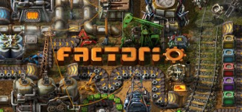

시뮬레이션

factorio-https://store.steampowered.com/app/427520/Factorio
96% 압긍-경영, 시뮬레이션, 크래프팅, 픽셀 그래픽
₩ 40,000
Kenshi-https://store.steampowered.com/app/233860/Kenshi
95% 압긍-오픈 월드, 샌드박스, RPG, 생존, 전략, 건설
₩ 31,000

Stardew Valley-https://store.steampowered.com/app/413150/Stardew_Valley
98% 압긍-농장 시뮬레이션, 생활 시뮬레이션, RPG, 픽셀 그래픽
₩ 16,000